Quando adulta, Stella foi enfermeira de cuidados paliativos encarregada de ajudar a aumentar a qualidade de vida de pacientes com doenças graves. Ela acompanhou aqueles que poderiam não ter muito tempo, e aliviou sua dor estando lá para eles, até que ela mesma ficou doente.
Em Spiritfarer, os jogadores vislumbram as memórias de Stella quando ela relembra suas visitas familiares à Alsácia durante sua infância, suas novas amizades enquanto visitava Shirakawa-gō durante sua idade adulta, seus pacientes como trabalhadora de saúde em Oxbury e seus pesadelos cheios de ansiedade quando ela soube de seu câncer que avança rapidamente
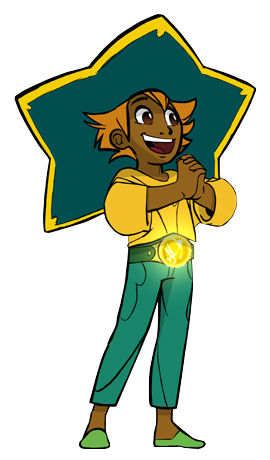Albert é um personagem do Spiritfarer e ele administra o Estaleiro, onde você obtém atualizações para o seu barco. Cada vez que você o visita e fala com ele, ele contará uma piada delicada para você.

Alex é uma foca muito engraçada e brincalhona encontrada nas paradas de ônibus. Falar com ele ativará o mapa, e qualquer ponto de ônibus descoberto poderá ser visitado.
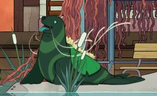Uma dona de casa, ela passou a maior parte de sua vida adulta cuidando de seus filhos e cuidando da vida doméstica de sua família. Envolver-se com Alice significava fazê-lo por sua própria vontade, pois ela nunca ousaria se impor. No entanto, ela amava moda, viagens e romances suecos, que ela lentamente revelou a Stella. Ela sofreu de demência em seus últimos anos.
Na vida de Stella, ela representa um momento decisivo em sua vocação como enfermeira. Alice foi a primeira paciente a morrer sob os cuidados de Stella, uma experiência que reafirmou sua vontade de trabalhar nos cuidados em fim de vida
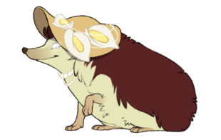Astrid é uma senhora idosa que dedicou sua vida a causas políticas. Quando jovem, durante a Segunda Guerra Mundial, ela escondeu crianças judias no porão do restaurante de sua mãe. Ela dedicou o resto de sua vida a ajudar os outros. Eventualmente, ela conheceu e se casou com Giovanni. Embora ela o amasse profundamente, os dois tiveram uma relação tumultuada. Apesar de Giovanni ser sempre infiel, ela achava difícil se separar dele.
Stella conheceu Astrid e seu marido quando ela era uma adolescente que morava na França. O casal se tornou avós substitutos dela, já que Stella nunca conheceu os dela.
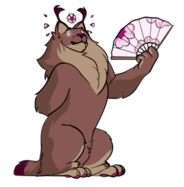Atul é um personagem espiritual em Spiritfarer. Ele foi apresentado com o Alpha Build do jogo e pode ser visto em ação na Spiritfarer Demo no gog. Tão teimoso quanto alegre, Atul é muito prático, adora água e nunca deixaria de comer uma boa refeição. Estar neste barco com todos esses passageiros realmente o faz sentir falta de sua família.
Tio paterno de Stella, ele imigrou para o nordeste da França ao mesmo tempo que Stella e seus pais, antes de se estabelecerem uma década depois no Oceano Atlântico. Como verdadeiro faz-tudo, ocupou várias funções técnicas em diversos ramos da construção até encontrar a sua verdadeira vocação: dirigente sindical, lutar pelos direitos dos trabalhadores menosprezados.
Atul tinha muito orgulho em ensinar a Stella tudo o que podia sobre as pequenas coisas da vida, desde pescar a cozinhar, até simplesmente sentar e apreciar o pôr do sol. Por mais alegre e petulante que pudesse ser, Atul escondeu um buraco emocional que infelizmente não pôde ser preenchido, independentemente de todo o amor que recebia, por mais sensacional que fosse a comida gourmet que comia.
Enquanto Stella ainda estava na Europa com vinte e poucos anos, Atul desapareceu sem deixar vestígios. Foi um grande choque para Stella, e ela nunca soube realmente o que havia acontecido com ele. Seu desaparecimento foi uma das razões pelas quais Stella decidiu se mudar para a América do Norte com sua mãe, Marie, e sua segunda irmã, Lilly.
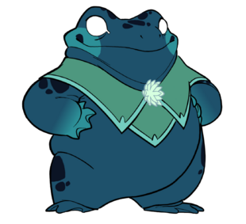Bruce e Mickey são dois pacientes muito estranhos que Stella encontra durante seu último ano como enfermeira de fim de vida. Mickey, um homem gigante imponente e intimidador, acaba em coma depois que dirigir embriagado leva a um acidente de carro. Seu irmão Bruce nunca sai de seu lado, acompanhando-o nas atividades mais extremas, perigosas e ilegais. Os dois são inseparáveis e, com a chegada de Mickey aos cuidados de Stella, se tornaram um grampo da ala por muitos meses.
Bruce sempre fala “em nome” de seu irmão, negando que Mickey simplesmente não esteja mais lá. Incapaz de aceitar o fato de que seu irmão, embora tecnicamente vivo, está além da salvação, Bruce continua fazendo pedidos bizarros e comentários raivosos, o que apenas mostra sua dor.

Estranhamente, Buck já faleceu quando Stella o conheceu. Na vida de Stella, Buck era amigo de sua irmã Lilly, que morreu na adolescência. Stella se lembra da recontagem de Lilly de muitas das histórias de Buck, após sua morte. Embora Stella nunca o tenha conhecido na vida, sua história a fascinou, assim como a personalidade geek que Lilly descreveu quando falou sobre ele.
Os hábitos de Buck de escapar de sua realidade por meio de RPGs de mesa levaram Stella a acreditar, de uma forma muito peculiar, que sua sintonia com o fim de sua vida o definia. Isso a fez se apaixonar por RPG, idolatrando Buck no processo.
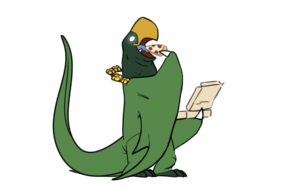Daffodil é o nome inglês para a planta conhecida como narcisa. Bom, para começar, remete ao mito inglês de Narciso, que se afoga ao buscar a própria imagem no lago. O gato é uma representação do olhar intrínseco, uma visão do indivíduo para ele mesmo, como na mitologia grega. Por outro lado, Daffodil também é conhecido popularmente pelo nome Rosa de Charon, ou seja, a flor do Caronte como parceiro do barqueiro.
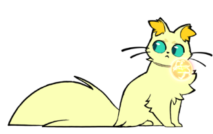Elena tem um espírito estudioso e professor. Ela é dura com Stella, desafiando-a em vários desafios sem nenhum elogio e criticando-a quando ela falha
Ao completar esses desafios, Stella é recompensada com 2 mapas do tesouro que levam a importantes tesouros dela. Elena então a instrui a escolher um desses para desistir. Em seu estilo de vida, Elena enfatiza a simplicidade, livrando-se de pertences e sentimentos desnecessários, como evidenciado por sua preferência por comida, hospedagem e sua aversão a abraços. Ela também espera o mesmo comportamento daqueles que estão sob sua tutela.
Em última análise, o propósito de Elena é ajudar Stella a aceitar a realidade injusta da vida, que nem todas as conquistas vêm com recompensa imediata e que viver necessariamente traz perdas; e que é superando os desafios que a pessoa se torna forte, para se soltar e seguir em frente.
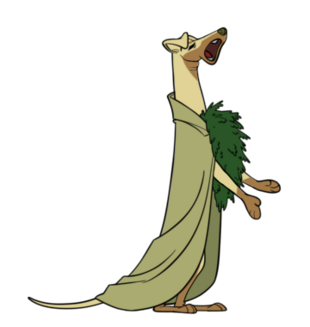Em vida, Gustav foi organizador de eventos. Ele é um tanto esnobe. Quando feliz, Gustav ocasionalmente toca violino ou dá Tchotchkes caros para Stella que podem ser vendidos. Quando está em êxtase, Gustav ocasionalmente faz Sushi. Ele considera Stella sua assistente quando começa a organizar a exposição.
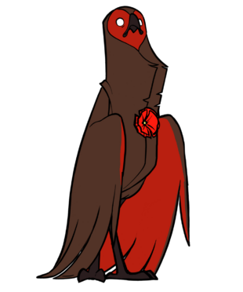Na vida, Gwen teve um relacionamento difícil com seus pais, principalmente com o pai. Está implícito em seu diálogo que ela conheceu Stella antes de se tornar um Spiritfarer. Gwen tem uma personalidade muito blasé, possivelmente devido à sua vida de classe alta. No entanto, ela é muito afetuosa com Stella.
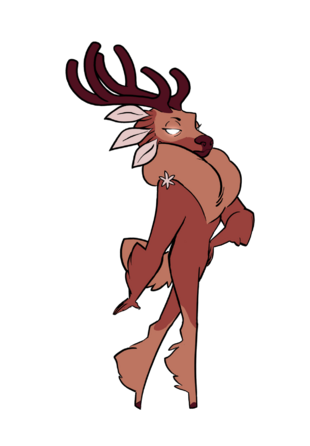Giovanni lutou na Segunda Guerra Mundial na Resistência, depois conquistou para si uma vida comum de comércio e prazeres simples. Extremamente cuidadoso com sua aparência e seus comentários espirituosos, Giovanni sempre fez questão de fazer tudo ao seu alcance para encantar todos ao seu redor, mesmo que às vezes envolvesse fazer coisas sombrias apenas para ganhar o coração de alguém.
Até sua morte por ataque cardíaco, Giovanni manteve seu lema “Carpe Diem”. Ele entendeu a dor que causou a Astrid, sem se arrepender de verdade por isso
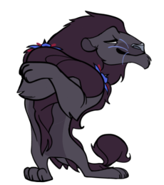Stanley é muito alegre e terá pedidos estranhos em comparação com muitos dos outros passageiros. Ele pedirá que você coloque coisas estranhas na fundição ou que cozinhe itens estranhos na cozinha. Ele é muito curioso e criativo e tem paixão por encenar peças, desenhar e conversar com seu amigo Jacob, o besouro.
Ele gosta de seguir você, curioso para saber o que o poderoso capitão está tramando, expressando que deseja ser um capitão como você quando ficar mais velho. Ele não entende por que as pessoas às vezes são más e pode facilmente ficar desanimado. No entanto, ele sempre parece se recuperar e se animar novamente.
"Eu me lembro do que meu pai costumava dizer. 'Stanley, as pessoas não são realmente más. Às vezes, suas intenções simplesmente tomam o caminho errado.'" - Stanley . Semelhante a como você é visto, Stanley parece ter seu pai em alta consideração. Ele se preocupa por ter decepcionado sua mãe. Como se fosse vítima de sua doença, ele a desapontou.
Stanley diz que 'às vezes não há problema em perder', referindo-se ao fato de que ele não conseguia acordar. Em seu leito de morte, ele afirma que estava tentando ser corajoso, mas estava com medo do que estava por vir. Ele deseja se tornar um super-herói para não ter que ter medo, e espera que tudo o que ele está passando seja apenas um pesadelo. Ele falava sozinho, tentando acordar. Ele tentou o seu melhor, mas não conseguiu vencer.
Em everdoor, antes de seus momentos finais, ele pede que você cuide de Jacob, seu besouro de estimação. Anima-se em seus momentos finais para dizer com orgulho que se tornou o personagem principal de sua peça e que fará um bom show. No final, ele sente frio, desejando que sua mãe e seu pai estivessem presentes, mas dizendo que está grato por você estar aqui
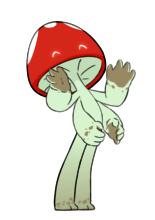Um verdadeiro filho da terra, Summer cresceu em uma fazenda do meio-oeste, em uma família muito rígida. Seu trabalho como engenheira agrônoma a levou a trabalhar em grandes empresas agrícolas, onde desenvolveu câncer de mama devido ao uso intenso de produtos químicos. Sua doença a levou a deixar sua cidade para trás, para se curar. Foi assim que ela conheceu Rose, o amor de sua vida, e a tia de Stella. Durante sua recuperação, Summer desenvolveu um interesse pela agricultura biodinâmica. Sua jornada em direção a uma saúde melhor também a levou a abraçar seu lado mais espiritual. É nesse ponto de sua vida que ela jurou viver todos os dias sob o brilho do que chamou de amor universal.
Com Rose, ela construiu um jardim florido em uma área remota apenas para os dois. Muitos dias felizes foram passados nesta casa que eles próprios construíram, até que Rose faleceu.
A última década do verão foi cheia de lutas. A perda de Rose a deixou à deriva e, sem ela ao seu lado, ela achou difícil cuidar de si mesma. Então, quando o câncer voltou, foi para sempre. Ela morreu com Stella ao seu lado.
Summer foi a pessoa que inspirou Stella a se tornar uma enfermeira
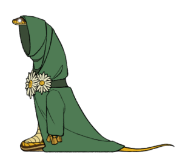Recomendado preencher após conhecer melhor os personagens maravilhosos!